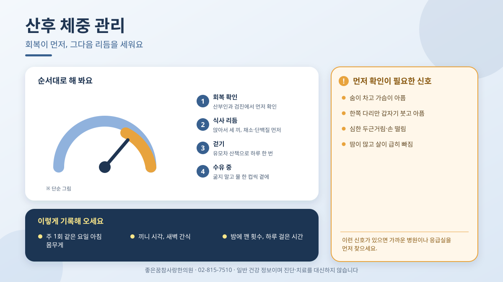

이종호 한의사 감수좋은꿈참사랑한의원 대표원장 (한의사 면허번호 19769)발행 2026-11-26 · 수정 2026-11-26
이 글의 차례
아기 옷을 정리하다 옷장 깊숙이 넣어 둔 임신 전 청바지를 꺼내 봅니다. 허벅지까지는 올라가는데 단추가 잠기지 않습니다. 거울 앞에서 한숨을 쉬고 다시 고무줄 바지를 입습니다. 출산하면 저절로 빠진다던 몸무게는 몇 달째 같은 숫자에 머물러 있습니다.
진료실에서 산후 체중 이야기를 꺼내시는 분들은 대개 조급함과 미안함을 함께 안고 오십니다. 빨리 예전 몸으로 돌아가야 할 것 같은 조급함, 그리고 아기를 돌보는 시기에 내 몸무게를 신경 쓰는 것이 이기적인 건 아닐까 하는 미안함입니다.
저는 두 마음 모두 자연스럽다고 말씀드립니다. 다만 순서는 정해 두는 것이 좋습니다. 먼저 몸이 회복하고, 그다음 체중을 다룹니다. 회복이 덜 된 몸에 급하게 식사를 줄이면 기운이 더 떨어지고, 오히려 체중이 다시 늘어나는 흐름으로 이어지기 쉽습니다.
이 글에서는 출산 뒤 몸무게가 어떤 흐름으로 줄어드는지, 왜 더디게 빠지는지, 수유 중에는 어떻게 조절하는지, 그리고 생활에서 무엇부터 바꾸면 좋은지 차례로 정리했습니다.
출산 뒤 몸무게는 어떤 흐름으로 줄어드나요?
출산 직후에는 아기와 태반, 양수의 무게만큼 몸무게가 한 번에 줄어듭니다. 그 뒤 몇 주 동안은 임신 중 몸에 고여 있던 물이 땀과 소변으로 빠지면서 조금씩 더 줄어듭니다. 이 시기에 땀이 많이 나고 화장실을 자주 가는 것도 그래서입니다.
여기까지는 몸이 알아서 하는 일입니다. 그다음부터 남는 몸무게는 임신 기간 동안 쌓인 지방과, 움직임이 줄면서 빠진 근육의 변화가 섞여 있습니다. 이 부분은 저절로 빠지기보다 생활의 흐름에 따라 천천히 달라집니다.
많은 분이 출산 뒤 몇 달에 걸쳐 조금씩 줄어드는 흐름을 보이고, 1년 안팎을 두고 임신 전에 가까워지는 경우가 흔합니다. 다만 임신 중 늘어난 폭, 수유 여부, 잠, 나이, 출산 횟수에 따라 속도는 꽤 다릅니다. 숫자가 몇 주 멈춰 있는 시기도 흔히 찾아옵니다.
왜 출산 뒤에는 몸무게가 더디게 빠질까요
가장 큰 이유는 잠입니다. 밤잠이 두세 시간씩 쪼개지면 배고픔을 알리는 신호는 커지고, 배부름을 알리는 신호는 약해집니다. 새벽 수유를 마치고 나면 단것이나 빵이 당기는 것도 의지가 약해서가 아니라 몸이 피로를 그렇게 표현하는 것입니다.
식사 리듬도 흐트러집니다. 아기를 안은 채 서서 몇 숟가락 뜨고, 아기가 잠든 틈에 남은 음식을 급하게 먹습니다. 끼니를 거르다가 한 번에 많이 먹으면 같은 양을 먹어도 몸에 더 쌓이기 쉽습니다.
움직임의 양도 달라집니다. 하루 종일 바쁘게 움직이는 것 같아도 대부분 집 안에서 짧게 오가는 움직임이고, 아기를 안거나 수유하며 앉아 있는 시간이 깁니다. 임신 막바지와 출산 뒤 회복기를 거치며 근육도 줄어 있어서, 같은 식사에도 쓰는 에너지가 적어집니다.
한의학에서는 출산 뒤를 기운과 혈이 크게 쓰인 시기로 봅니다. 기운이 떨어져 있으면 몸속 물의 흐름이 더디고 쉽게 붓고 무거워집니다. 그래서 진료실에서는 몸무게 숫자보다 붓기와 피로, 소화, 잠을 함께 살핍니다.
수유 중에는 체중 관리를 어떻게 하나요?
수유를 하면 몸무게가 저절로 빠진다는 말도 있고, 수유 중에는 오히려 잘 안 빠진다는 말도 있습니다. 둘 다 맞는 경우가 있습니다. 젖을 만드는 데 에너지가 쓰이지만, 그만큼 배고픔도 커지고 잠이 부족해 먹는 양이 늘기도 합니다.
수유 중에는 식사량을 크게 줄이는 다이어트를 권하지 않습니다. 젖 양이 줄거나 엄마의 기운이 먼저 바닥날 수 있기 때문입니다. 대신 먹는 양보다 먹는 순서와 시각, 간식의 종류를 바꾸는 쪽으로 접근합니다.
물을 충분히 드시는 것도 중요합니다. 수유할 때마다 물 한 컵을 곁에 두고 마시는 습관을 들이면, 목마름을 배고픔으로 착각해 간식을 찾는 일이 줄어듭니다. 단 음료보다 물이나 보리차를 곁에 두세요.
체중 감량을 돕는다는 약이나 차, 보조제는 수유 중에는 먹기 전에 산부인과나 소아청소년과와 상의하셔야 합니다. 성분이 젖으로 넘어갈 수 있고, 아기에게 어떤 영향을 줄지 알기 어려운 경우가 많습니다.
출산 뒤 체중과 함께 살펴야 하는 것
임신 중 혈당이 높다는 말을 들으셨던 분은 출산 뒤에도 혈당 검사를 다시 받아 보시길 권합니다. 임신성 당뇨가 있었다면 출산 뒤 몇 달 안에 확인하고, 그 뒤로도 정기 검진에서 혈당을 챙기는 것이 좋습니다.
출산 뒤 몇 달 사이 갑상선 기능이 잠시 흔들리는 경우도 있습니다. 쉽게 지치고 추위를 많이 타며 붓고 몸무게가 늘거나, 반대로 가슴이 두근거리고 땀이 많고 살이 갑자기 빠진다면 혈액 검사로 확인해 봅니다. 이럴 때는 체중 관리보다 원인 확인이 먼저입니다.
마음의 상태도 몸무게와 이어져 있습니다. 기분이 가라앉고 아무것도 하기 싫어 단것으로 버티는 날이 이어지거나, 반대로 입맛이 전혀 없어 끼니를 거른다면 체중보다 마음 이야기를 먼저 나누는 것이 좋습니다.
배가 가운데로 볼록 튀어나오거나, 윗몸을 일으킬 때 배 한가운데가 길게 솟아오른다면 임신 중 벌어진 배 근육이 아직 다 모이지 않았을 수 있습니다. 이럴 때 배에 큰 힘을 주는 운동을 서두르면 오히려 부담이 되니, 산부인과에서 먼저 확인받고 작은 움직임부터 시작하세요.
기침이나 재채기를 할 때 소변이 새는 느낌이 있다면 골반 아래 근육이 아직 회복 중이라는 신호입니다. 뛰거나 점프하는 운동은 잠시 미루고, 걷기와 골반 아래 근육을 조이는 연습을 먼저 해 보세요.
아기와 함께하는 하루에 끼워 넣는 움직임
따로 운동할 시간을 내기 어려운 시기에는 하루 안에 작은 움직임을 끼워 넣는 쪽이 현실적입니다. 아기를 재우며 거실을 천천히 오가는 것도, 기저귀를 갈고 일어설 때 무릎을 굽혔다 펴는 것도 모두 움직임입니다.
수유를 마친 뒤 아기를 눕히고 나서 1분 동안 어깨를 크게 돌리고 등을 펴 주세요. 하루 여덟 번 수유한다면 그것만으로 여덟 번의 짧은 스트레칭이 됩니다. 굽은 등이 펴지면 숨이 깊어지고 몸도 덜 무겁게 느껴집니다.
계단이 있는 집이라면 아기를 안지 않은 채 천천히 한두 층 오르내려 보세요. 아기를 안고 계단을 오르는 것은 무릎과 허리에 부담이 크니, 운동으로는 빈손일 때 하시는 것이 좋습니다.
남은 음식과 아기 간식을 대하는 법
아기가 남긴 이유식이나 과자를 아깝다고 한 숟가락씩 드시는 습관은 생각보다 하루 양을 크게 늘립니다. 아기 그릇에 남은 것은 바로 정리하고, 아기 간식은 내 손이 잘 닿지 않는 높은 곳에 두세요.
가족이 함께 먹는 저녁 식탁에서는 내 접시를 따로 덜어 먹는 것이 도움이 됩니다. 큰 반찬 그릇에서 계속 집어 먹으면 얼마나 먹었는지 알기 어렵습니다. 작은 접시에 한 번 담고, 다 먹으면 수저를 내려놓는 습관을 들여 보세요.
배달 음식이 잦아지는 시기라면 한 번에 끊기보다 주문할 때 밥 양을 줄이고 채소 반찬을 더하는 쪽으로 바꿔 보세요. 국물은 건더기 위주로 드시면 다음 날 아침의 붓기도 덜합니다.
먼저 이렇게 여쭙니다
처음 오시면 저는 대략 이런 순서로 여쭙니다. 미리 생각해 오시면 이야기가 훨씬 수월해집니다.
- 출산은 언제, 어떤 방법으로 하셨고 산부인과 검진은 마치셨나요?
- 임신 전 몸무게와 지금 몸무게는 어느 정도인가요?
- 수유 중이신가요? 모유와 분유를 어떻게 섞고 계신가요?
- 하루 끼니는 몇 번이고, 주로 언제 무엇으로 드시나요?
- 밤에 몇 번 깨고, 새벽에 간식을 찾게 되나요?
- 임신 중 혈당이나 혈압, 갑상선 이야기를 들은 적이 있나요?
모든 질문에 정확히 답하지 못하셔도 괜찮습니다. 산부인과 검진 결과와 드시는 약, 영양제 이름만 가져오셔도 이야기의 절반은 시작된 셈입니다.
임신 전에 체중을 관리해 본 경험이 있는지, 그때 어떤 방법이 맞았고 어떤 방법이 힘들었는지도 함께 여쭙니다. 예전에 맞았던 방법을 지금의 생활에 맞게 조금 바꾸는 것이 가장 오래가는 경우가 많습니다.
일상에서 먼저 해 볼 수 있는 것
출산 뒤 체중 관리는 무엇을 끊는 것보다 흐트러진 리듬을 다시 세우는 것에서 시작합니다. 한 번에 하나씩, 아기와 함께하는 하루 안에서 할 수 있는 것부터 고르세요.
- 끼니를 세 번으로 정하고, 앉아서 먹는 시간 10분 지키기
- 접시에 채소와 단백질 반찬을 먼저 담고 밥은 그다음에
- 수유할 때마다 물 한 컵 곁에 두기
- 새벽 간식은 과자 대신 우유, 삶은 달걀, 견과 조금으로
- 유모차를 밀고 하루 한 번 바깥 걷기
- 아기가 잘 때 하루 한 번은 같이 눕기
걷기는 산부인과 검진에서 괜찮다는 말을 들은 뒤 시간을 조금씩 늘려 갑니다. 처음에는 동네 한 바퀴, 익숙해지면 조금 더 멀리. 숨이 약간 차되 옆 사람과 이야기할 수 있을 정도가 적당합니다. 햇볕을 쬐며 걷는 시간은 밤잠에도 도움이 됩니다.
근력 운동은 배 힘과 골반 아래 근육이 어느 정도 돌아온 뒤 시작합니다. 처음에는 숨을 내쉬며 아랫배를 살짝 당기는 작은 동작, 벽에 기대 앉았다 일어서기 같은 가벼운 움직임부터 합니다. 기침할 때 소변이 새거나 아랫배가 묵직하다면 강도를 낮추세요.
몸무게는 매일 재기보다 일주일에 한 번, 같은 요일 아침에 재시길 권합니다. 출산 뒤에는 붓기와 수유량에 따라 하루하루 숫자가 크게 오르내려서, 매일 재면 마음만 흔들립니다. 허리둘레를 한 달에 한 번 함께 재 두면 흐름이 더 잘 보입니다.
한의원에서 함께 살필 수 있는 경우
- 출산 뒤 몸이 붓고 무거우며 쉽게 지치는 경우
- 잠이 쪼개진 뒤로 단것과 빵을 찾는 날이 늘어난 경우
- 소화가 더디고 배에 가스가 차며 대변이 시원하지 않은 경우
- 체중 관리를 시작하고 싶지만 기운이 없어 엄두가 나지 않는 경우
- 수유를 마친 뒤 본격적으로 체중 관리를 상의하고 싶은 경우
좋은꿈참사랑한의원에 오시면 먼저 아래 '먼저 확인이 필요한' 신호가 없는지부터 봅니다. 그다음 맥을 짚고 붓기와 소화, 잠, 생리 회복 여부를 여쭙니다. 필요하다고 판단되면 인바디로 근육량과 체지방, 부종 경향을 함께 보고 목표를 숫자보다 흐름으로 잡습니다.
진찰한 내용을 바탕으로 생활에서 바꿔 볼 것 하나와 함께 침, 한약 상담 가운데 지금 상태에 맞는 것을 정합니다. 한약은 수유 중인지, 드시는 약과 영양제를 모두 확인한 뒤 신중하게 정하고, 수유 중에는 체중보다 회복을 먼저 돕는 쪽으로 방향을 잡습니다.
다음 임신 가능성이 있거나 계획 중이시라면 먼저 알려 주세요. 그럴 때는 산부인과와 상의한 뒤 방향을 정합니다. 혈당이나 갑상선 확인이 필요해 보이면 내과 검사를 먼저 권합니다.
이렇게 기록해 오시면 상담이 쉬워집니다
체중 관리는 숫자 하나보다 생활의 흐름을 보는 것이 중요합니다. 2주 정도만 간단히 적어 보세요.
- 일주일에 한 번 같은 요일 아침 몸무게, 한 달에 한 번 허리둘레
- 끼니 시각과 거른 끼니
- 새벽이나 밤에 먹은 간식
- 밤에 깬 횟수와 낮에 누운 시간
- 하루 걸은 시간
- 붓기가 심했던 날과 대변 본 날
빠진 날이 있어도 괜찮습니다. 기록을 나란히 놓고 보면 몸무게가 멈춰 있던 주와 잠이 가장 부족했던 주가 겹치는 경우가 많고, 그것이 다음 걸음을 정하는 실마리가 됩니다.
내 몸에게도 시간을 주세요
열 달 동안 아기를 품었던 몸이 다시 제자리를 찾는 데에도 시간이 필요합니다. 숫자가 몇 주 멈춰 있다고 해서 실패한 것이 아닙니다. 그 사이 잠과 식사 리듬을 하나씩 세워 두면, 숫자는 그 뒤를 따라옵니다.
주변 사람의 몸무게나 연예인의 출산 뒤 사진과 비교하는 일도 잠시 내려놓으세요. 사람마다 출산 과정과 수유, 잠, 도와줄 사람이 모두 다릅니다. 비교할 대상은 지난달의 나 하나면 충분합니다.
이번 주에는 앉아서 먹는 끼니 하나, 혹은 유모차 산책 한 번만 골라 보세요. 다음에 오시면 2주의 기록부터 함께 펼쳐 보겠습니다.
이런 증상은 먼저 확인이 필요합니다
- 숨이 차고 가슴이 아프거나, 한쪽 다리만 갑자기 붓고 아픈 경우
- 가슴이 심하게 두근거리고 손이 떨리며 땀이 많고 살이 급히 빠지는 경우
이런 신호가 있으면 한의원보다 가까운 병원이나 응급실을 먼저 찾으세요.
함께 읽으면 좋은 글
- 출산 뒤 몸 회복, 관절·땀·잠·기분은 무엇부터 살피나요?
- 비만이라는 말을 들었을 때 체중보다 먼저 무엇을 살피나요?
- 체중이 더 이상 줄지 않는 정체기에는 무엇을 먼저 점검하나요?
- 다이어트 상담에서는 무엇을 확인하나요?
- 갑상선 기능 저하나 항진이 있을 때 한의원 진료는 어떻게 함께 살피나요?

여쭙는 것
- 출산은 언제, 어떤 방법으로 하셨고 산부인과 검진은 마치셨나요?
- 임신 전 몸무게와 지금 몸무게는 어느 정도인가요?
- 수유 중이신가요? 모유와 분유를 어떻게 섞고 계신가요?
생활에서 해 볼 것
- 끼니를 세 번으로 정하고, 앉아서 먹는 시간 10분 지키기
- 접시에 채소와 단백질 반찬을 먼저 담고 밥은 그다음에
- 수유할 때마다 물 한 컵 곁에 두기
한의원에서 함께 살필 것
- 출산 뒤 몸이 붓고 무거우며 쉽게 지치는 경우
- 잠이 쪼개진 뒤로 단것과 빵을 찾는 날이 늘어난 경우
- 소화가 더디고 배에 가스가 차며 대변이 시원하지 않은 경우
먼저 확인이 필요한 신호
- 숨이 차고 가슴이 아프거나, 한쪽 다리만 갑자기 붓고 아픈 경우
- 가슴이 심하게 두근거리고 손이 떨리며 땀이 많고 살이 급히 빠지는 경우
한눈에 보는 표
| 구분 | 핵심 |
|---|---|
| 여쭙는 것 | 출산은 언제, 어떤 방법으로 하셨고 산부인과 검진은 마치셨나요? 임신 전 몸무게와 지금 몸무게는 어느 정도인가요? |
| 생활에서 해 볼 것 | 끼니를 세 번으로 정하고, 앉아서 먹는 시간 10분 지키기 접시에 채소와 단백질 반찬을 먼저 담고 밥은 그다음에 |
| 한의원에서 함께 살필 것 | 출산 뒤 몸이 붓고 무거우며 쉽게 지치는 경우 잠이 쪼개진 뒤로 단것과 빵을 찾는 날이 늘어난 경우 |
| 먼저 확인이 필요한 신호 | 숨이 차고 가슴이 아프거나, 한쪽 다리만 갑자기 붓고 아픈 경우 가슴이 심하게 두근거리고 손이 떨리며 땀이 많고 살이 급히 빠지는 경우 |
자주 묻는 질문
출산하고 언제부터 체중 관리를 시작하나요?
산부인과 검진에서 회복이 괜찮다는 말을 들은 뒤 식사 리듬과 걷기부터 시작하시길 권합니다. 식사량을 크게 줄이는 방법은 회복과 수유가 어느 정도 안정된 뒤에 상의합니다.
수유 중에 다이어트 한약을 먹어도 되나요?
수유 중에는 체중을 빠르게 줄이는 것보다 회복을 먼저 돕는 쪽으로 봅니다. 수유 중이라는 것과 드시는 약을 모두 확인한 뒤 신중하게 정하고, 필요하면 산부인과와 상의하시도록 안내합니다.
수유를 끊으면 살이 더 찐다는데 맞나요?
수유를 마치면 쓰이던 에너지는 줄어드는데 먹는 양은 그대로인 경우가 많아 그렇게 느낄 수 있습니다. 수유를 마칠 무렵 간식과 식사량을 조금씩 함께 조절하시면 도움이 됩니다.
몸무게가 몇 주째 그대로인데 방법이 잘못된 건가요?
출산 뒤에는 붓기와 수유량, 잠에 따라 숫자가 멈춰 보이는 시기가 흔합니다. 허리둘레와 몸의 가벼움을 함께 보시고, 2주 기록을 가져오시면 무엇을 바꿀지 함께 찾아봅니다.
출산 뒤 인바디 검사는 꼭 받아야 하나요?
모든 분께 하는 것은 아니고, 필요하다고 판단되면 근육량과 체지방, 붓기 경향을 보기 위해 권합니다. 숫자보다 다음에 무엇을 바꿀지 정하는 데 쓰는 참고 자료입니다.
좋은꿈참사랑한의원은 재진 때 지난번 이야기부터 이어서 여쭙니다. 진료시간과 예약은 오시는 길에서 확인하세요.
어디서 상담받을 수 있나요?
좋은꿈참사랑한의원은 서울 동작구 만양로2길 2 신성빌딩 3층·5층(서울 동작구 상도동, 7호선 상도역 3번 출구 근처)에 있습니다. 한의사 3명(이종호 대표원장, 조영기 수석진료원장, 정원영 진료원장)이 진료합니다. 진료시간은 평일 09:30~20:00(점심 13:00~14:00), 토·일·공휴일 09:30~15:00이며, 방문 전 전화로 확인을 권합니다. 예약은 네이버 예약, 카카오톡 상담, 전화 02-815-7510로 받습니다.
이 글은 일반적인 건강 정보이며 개인의 진단이나 치료를 대신하지 않습니다. 증상이 있거나 복용 중인 약이 있다면 진료를 통해 확인하세요. 치료 효과는 개인마다 다를 수 있습니다.
작성 기준: 일반적으로 알려져 있는 건강 정보를 참고해 정리했습니다(대표원장 감수). 증상 기록은 1~2주 동안 하루 1회, 비슷한 시간에 적어 오시면 지난 상태와 비교하기 쉽습니다.